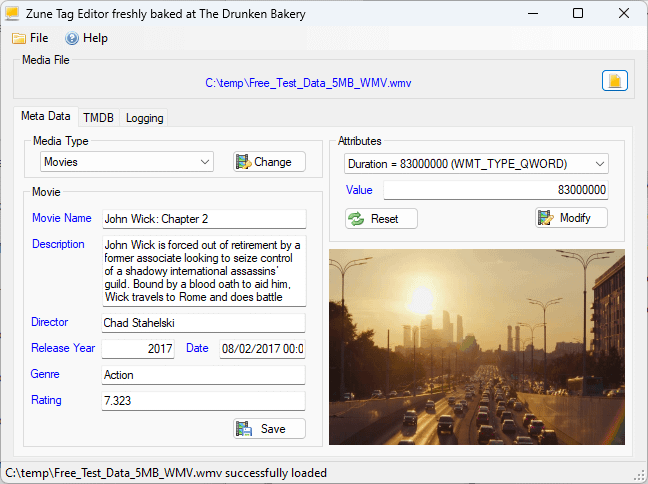
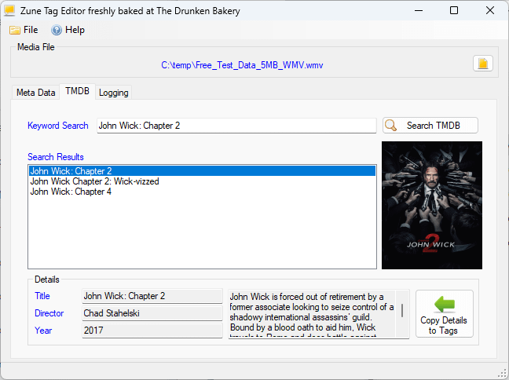
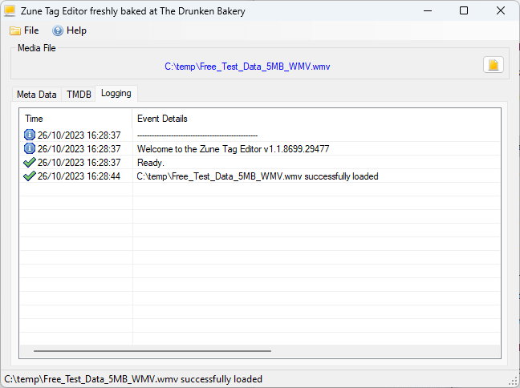

Tag your videos the way your Zune expects.
ZuneTag is a free Windows tool for editing the metadata on your .wmv files, so they show up
correctly as Movies, TV Shows, Music Videos, or generic
Videos when synced to a Zune.
Why videos land in the wrong category
A Zune decides whether a video is a Movie, TV Show, or Music Video by reading a pair of GUID-valued
attributes baked into the file itself — WM/MediaClassPrimaryID and
WM/MediaClassSecondaryID. Most tools that produce or re-encode WMV files never set these
correctly, so files land in the wrong section of the device, or don't show up at all.
ZuneTag lets you inspect and fix a file's raw attributes directly, then fills in everything around them — title, description, genre, year, cast, cover art — to match.
What it does
Direct attribute editing
Reads and writes WMV metadata attributes via the Windows Media Format SDK, including the Zune-specific media-classification GUIDs.
Type-specific panels
Dedicated screens for Movie, TV Show, Music Video, and generic Video metadata, matching exactly what the Zune expects for each type.
TMDB-powered metadata
Built-in search against The Movie Database pulls in title, genre, director, description, and cover art — then copies it straight into the tag fields.
Automatic thumbnails
Generates a preview frame from the video file itself, so you can confirm you're tagging the right one before you save.
Built-in diagnostics
Logs diagnostic output to a local file, making it easy to troubleshoot a stubborn file or share details when reporting a bug.
Free & portable
A single, self-contained ZuneTag.exe with everything bundled in — no installer required, though one's available if you want it.
See it in action



Get ZuneTag
Current version: check the releases page
- Windows 7 SP1 or later.
- .NET Framework 4.8 runtime — most current Windows installs already have this.
- Windows Media Format SDK's
WMVCore.dll, registered and present on the system (ships with Windows Media Player; installing the Windows Media Feature Pack resolves it on installs that omit media features). - An internet connection on first run, to download an FFmpeg binary for thumbnails and to search TMDB. No API key setup needed — one's already bundled in.